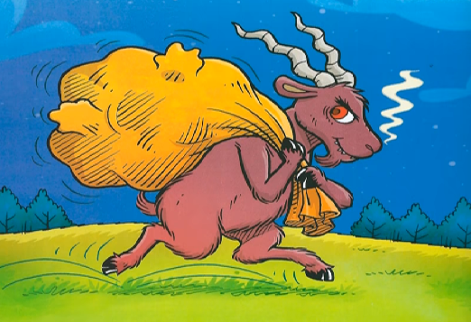
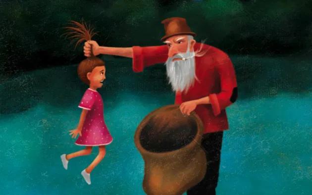
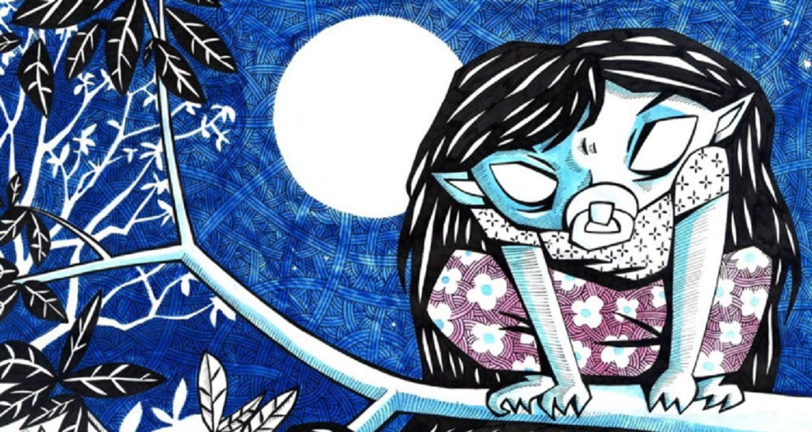
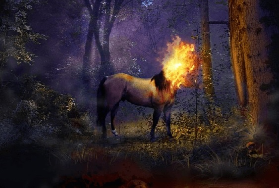
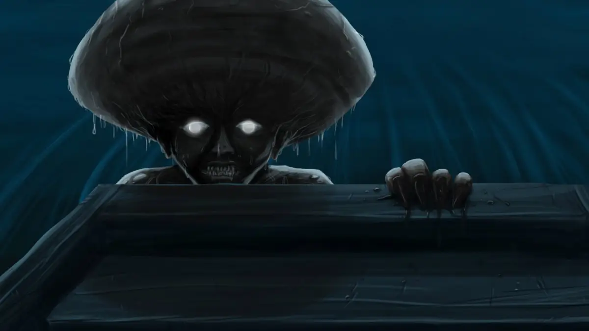
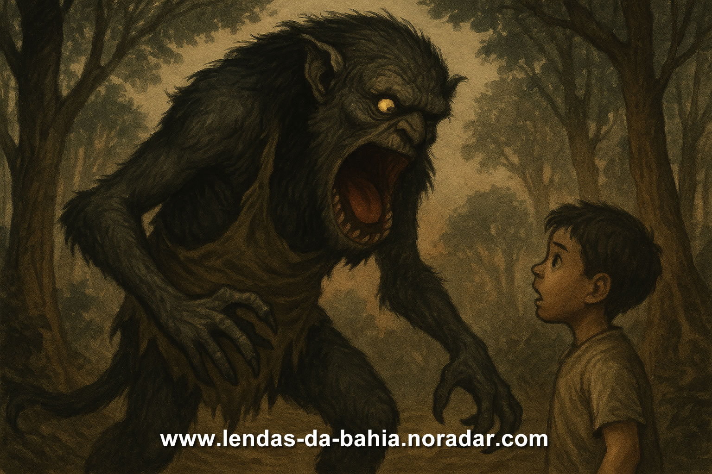

Lendas e Mitos da Região Nordeste
🐐 Cabra Cabriola
A Cabra Cabriola é uma lenda do folclore nordestino que retrata uma cabra preta monstruosa, com olhos de fogo e chifres retorcidos. Ela aparece à noite para assustar crianças desobedientes, sendo usada por pais e avós como forma de disciplina. Sua origem mistura influências portuguesas, africanas e indígenas, e simboliza o medo como ferramenta pedagógica. Com o tempo, deixou de ser apenas uma ameaça e passou a integrar narrativas populares, tornando-se um ícone cultural do Brasil.
👹 Papa Figo
O Papa-Figo é uma lenda brasileira, principalmente do Nordeste, que fala de um homem velho e doente que carregava um saco para raptar crianças. Acreditava-se que ele comia seus fígados para tentar se curar. A história era usada por pais e avós para assustar e disciplinar os pequenos, ensinando-os a não falar com estranhos e a obedecer.
👩🏻 Comadre Fulozinha
A Comadre Fulozinha é uma lenda nordestina que retrata uma jovem encantada de longos cabelos negros, guardiã das matas e protetora dos animais. Ela assusta caçadores e lenhadores com assobios misteriosos e pune quem desrespeita a natureza, mas pode ajudar quem a respeita.
🔥 Mula-sem-Cabeça
Segundo a lenda, a mula sem cabeça é uma mulher amaldiçoada que se transforma em um cavalo que solta fogo pelo pescoço e galopa pelos sertões durante a noite.
🧑 Cabeça de Cuia
A Cabeça de Cuia é uma lenda do Piauí sobre Crispim, um jovem que, em um acesso de raiva, matou a própria mãe. Antes de morrer, ela o amaldiçoou a viver no rio Parnaíba como um monstro de cabeça enorme em forma de cuia. Para quebrar a maldição, ele teria que devorar sete virgens.
👿 Quibungo
O Quibungo é uma lenda afro-brasileira, principalmente da Bahia, que fala de um monstro enorme e assustador, descrito com uma boca nas costas por onde devora crianças desobedientes. Assim como o Bicho-Papão, sua história era usada para disciplinar e amedrontar os pequenos, reforçando respeito e obediência.